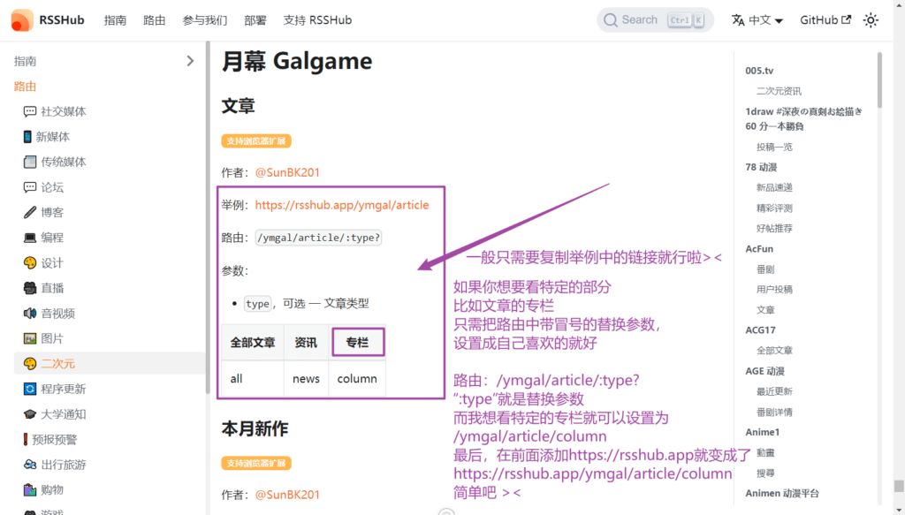
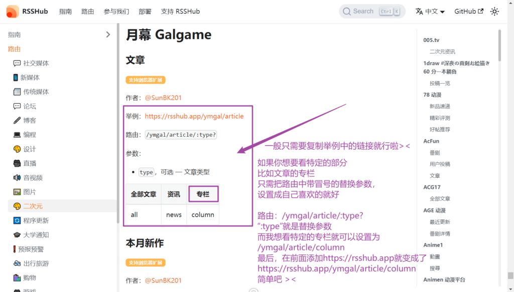
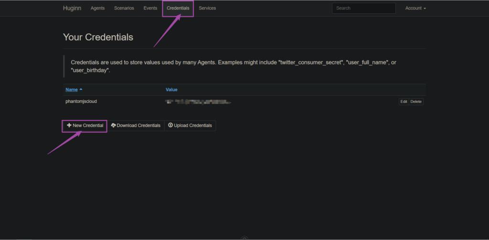
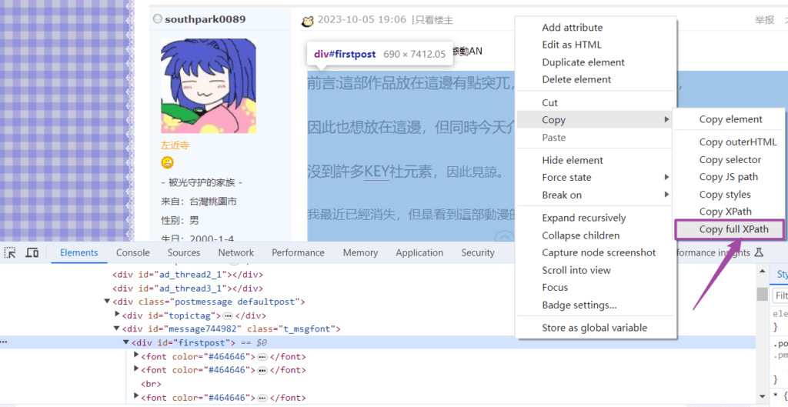
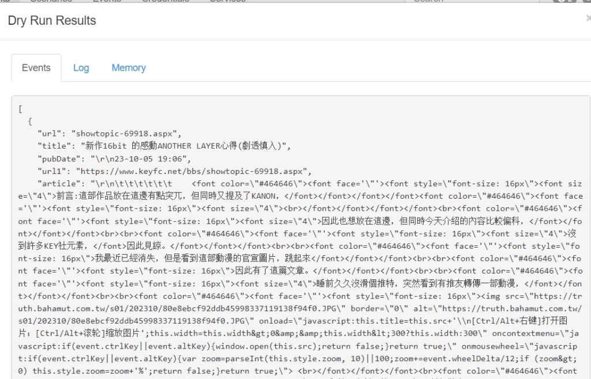
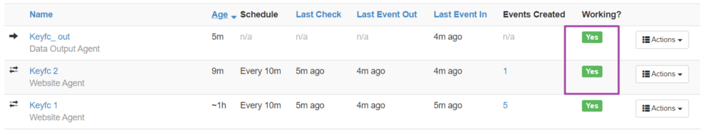

如果你对 RSS 有一定的了解，可以查看右边的索引，跳转到自己需要的地方唷><
什么是 RSS 呢
梦开始的地方简单来说，RSS就像是一个新闻订阅服务，用户可以通过订阅自己喜欢的网站的RSS源，获取这些网站的最新内容和更新，而无需每次都去访问这些网站。用户可以将订阅的RSS源集中在一个地方，方便浏览和阅
读。 ——ChatGPT
如何使用 RSS 源
RSSHub 提供了一些公共RSS源，搜索自己喜欢的网站进行查找
这里以月幕Gal RSS源为例：
 

最后的最后，复制链接到RSS阅读器，点击添加订阅就可以啦w
Twitter的RSS源可以看这篇：Nitter Rss 403 的解决方案
手机端RSS阅读器可以使用开源的 Feeder
电脑端RSS阅读器可以使用开源的 Fluent Reader
想要全平台同步可以使用公共 Telegram机器人 订阅RSS源，由于是公共的可能会有延迟，下面将会介绍如何部署一个自己的Telegram机器人wwww
如何制作自己的 RSS 源
呜呜呜呜呜呜！找不到自己喜欢的RSS源怎么办，那当然是去RSSHub上提issues呀
那人家也不理我怎么办qwq
那就自己来做一个！利用huginn制作RSS源
下载安装篇
在linux中安装docker
|
|
启动docker容器（等待一分钟左右）
|
|
开放指定端口
|
|
在浏览器中打开Huginn
localhost替换为你自己的ip，然后打开（如图）
点击login，用户名与密码分别默认为admin与password
设置账户
为保证账户安全，点击account菜单，选择account修改账户密码

为Huginn使用做准备
准备 Api key
需要注册一个phantomjscloud账户，用来渲染动态网页成静态页面，注册好后从中获取ApiKey
在Huginn中新建凭证（Credentials）
在Huginn中使用ApiKey
如何使用Huginn
概述
一共分为4步：
- 利用PhantomJs agent将动态网页转成静态网页
- 利用Website agent解析提取文章标题
- 利用Website agent解析提取文章内容
- 利用DataOutputAgent将解析的东西转成RSS源
将动态网页转成静态网页
这里以制作Keyfc论坛 RSS源为例
点击新建代理（Agent）（没有说明的内容默认就行，不需要填写）

User agent：
|
|
提取文章标题与时间
点击新建代理（Agent）（Website Agent类型）

获取xpath路径可以用f12弹出控制台，然后点击选择元素，之后在页面中选择标题

点击文章标题可以看见这个样子

我们可以在控制台看见文章标题，右键选中，点击copy full xpath

可以看见完整的xpath路径是这个样子的
|
|
由于不同文章的xpath路径有可能不同，所以我们需要对这个路径做一些修改(不然抓取的文章只有这一个)
我们主要通过对比不同文章之间的xpath路径进行修改
以相同方式，复制第二篇文章完整xpath路径，如下
|
|
方法：找不同，来删除 （快背，快背，考试要考的><）
通过对比，可以看见最后的部分不同，删除不同之处，可以得到下面的xpath
|
|
那有的时候通过对比，没有不同之处怎么办呢？
笨…笨蛋！不修改不就行了嘛
以相同的方式获取发布时间

分别获取的第一篇与第二篇文章的发布时间
|
|
删除两者不同的地方，得到一下内容
|
|
点击两次Dry Run运行下看看

抓取成功啦，但是url有些问题，可以使用模板（template）使它们拼接起来


|
|
点击两次Dry Run运行下看看

完成！
提取文章内容
点击新建代理（Agent）（Website Agent类型）

点击标题链接查看文章内容，并以相同方式获取xpath路径
分别获取的第一篇与第二篇文章的内容xpath路径
|
|
通过对比没有不同之处，不需要修改

完成！
转成RSS源


点击actions菜单，选择show
这个后缀为.xml的链接就是你做的RSS源啦（啪唧啪唧，鼓掌www）
常见问题
如果遇到下面的working状态为no
不用担心，这是正常现象，页面更新的时候会自动变成yes
部署 Telegram RSS Reader Bot
项目地址：Bot
部署
下载安装篇
|
|
准备与配置
转向 @BotFather ，发送 /newbot 创建一个新的机器人，获取 token
转向 @userinfobot 获取您的用户 ID（环境变量：）MANAGER。
获取 Telegraph API 访问令牌（环境变量：）TELEGRAPH_TOKEN。每次获得新令牌时刷新页面。如果您有很多订阅，请确保获得至少 5 个代币。

编辑 docker-compose.yml 文件，替换 token , MANAGER , TELEGRAPH_TOKEN
|
|
更新
|
|
完结撒花！！